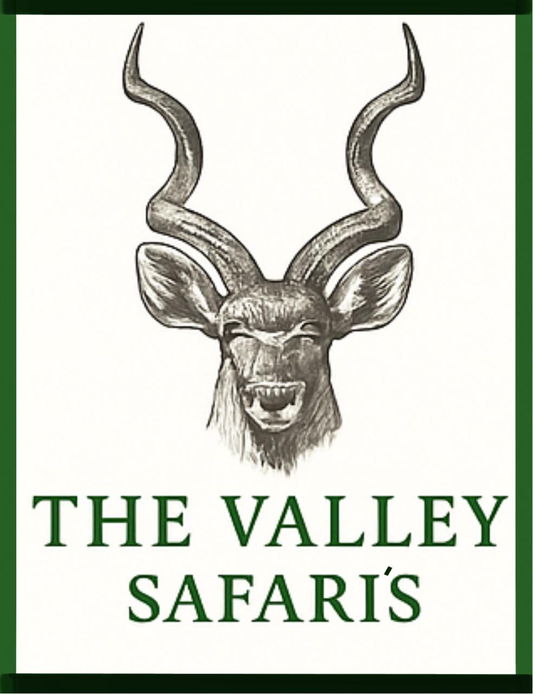
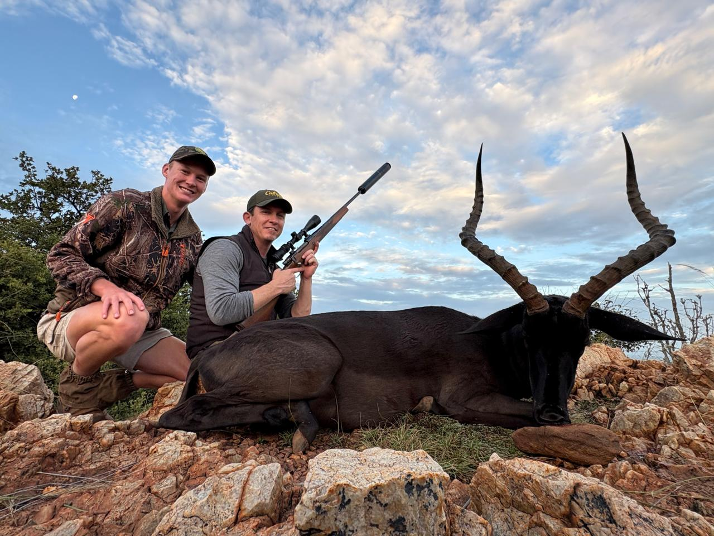
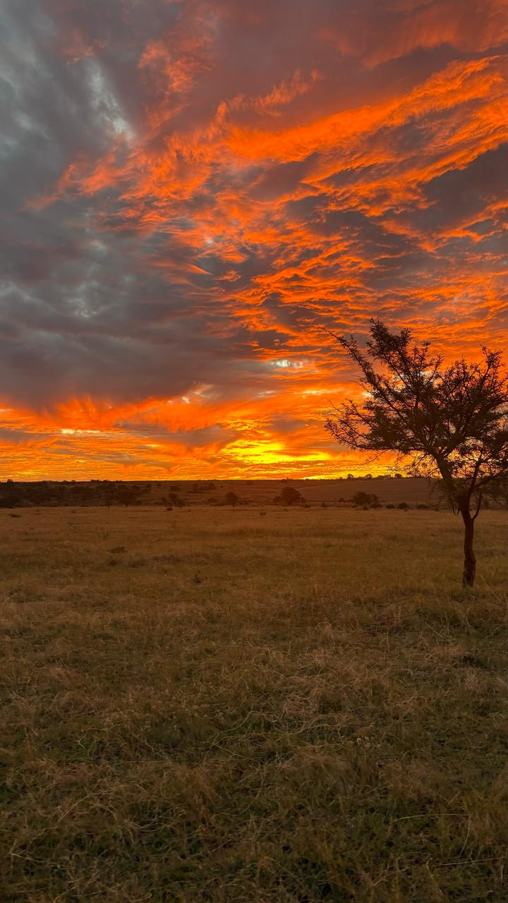
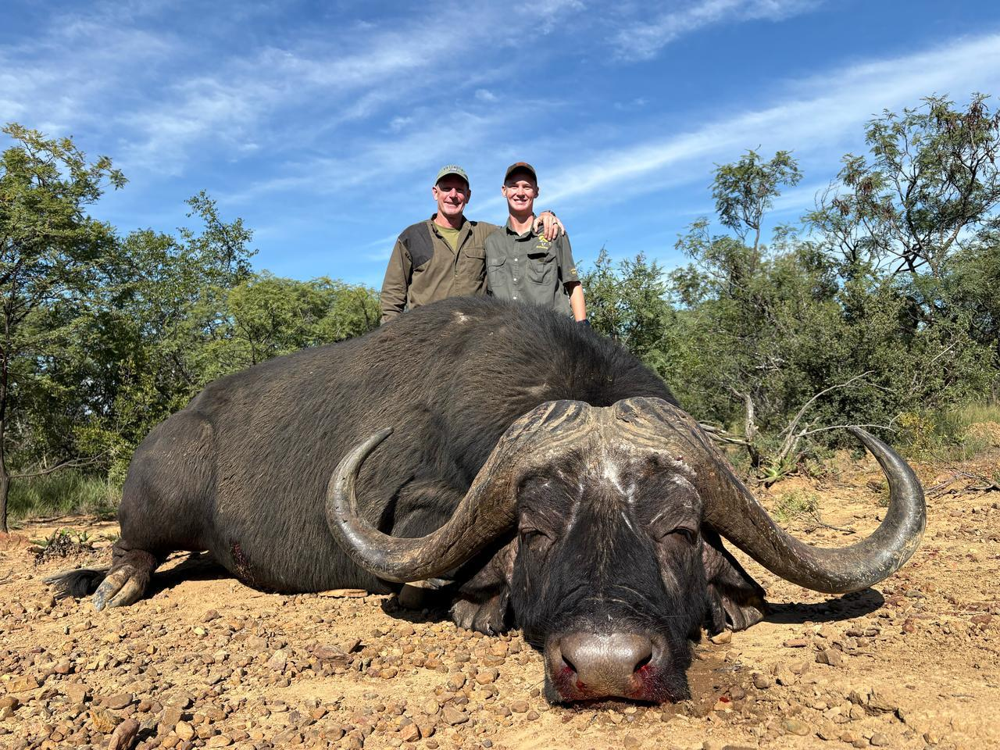

Hunters' Logbook & Guest Reviews
Real moments. Real trophies. Real memories.
Real moments. Real trophies. Real memories.
“One of the most professional and ethical hunts I’ve ever experienced. The Black Impala I harvested will remain one of my proudest moments. Thank you, Tihard and team!”
“No words. We captured some of the best sunset, elephant and giraffe shots ever. I left with full memory cards and a fuller heart.”
“Incredible bow-stalk opportunity on a Cape Buffalo. Adrenaline like never before. Guides were top-tier.”
“The Valley Lodge was a slice of heaven. Loved the food, rooms, and how personal everything felt. Arrived as a guest, left feeling like family.”
“This was my fourth safari in Africa, and this was by far the most memorable. Clean lodge, expert guides, and magical sunsets.”
“Everything was great, only missed WiFi in one of the remote camps, but honestly – it added to the charm.”